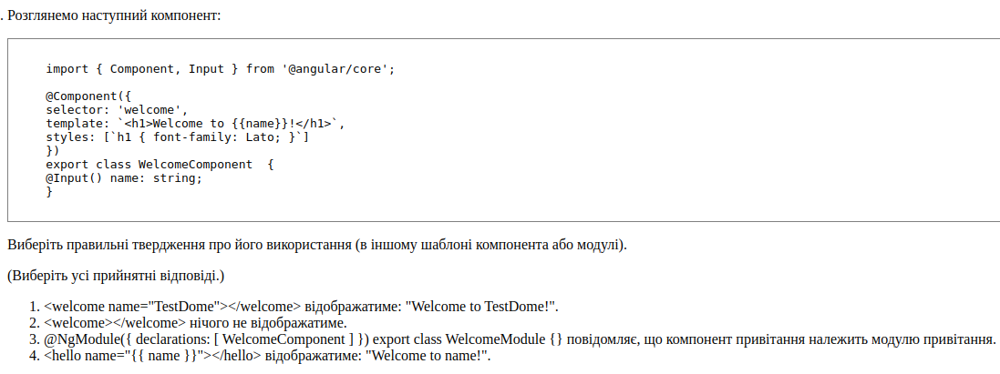
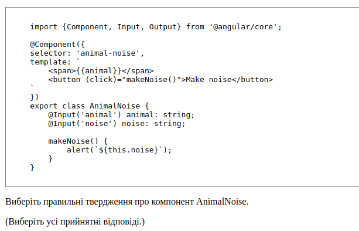
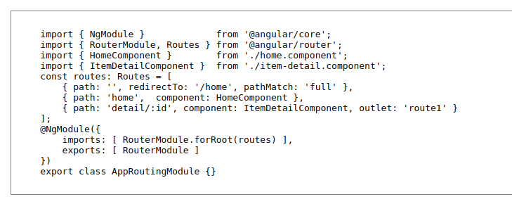
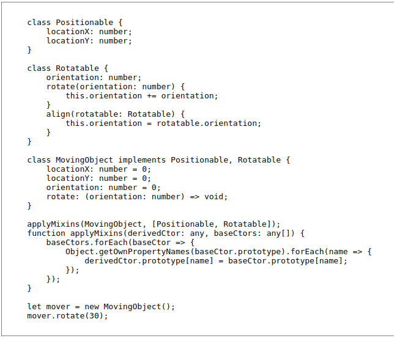

- Яка різниця між *ngIf і [hidden]?
*ngIf - це директива Angular, яка дозволяє додати елемент на сторінку в
залежності від значення виразу.
[hidden] - це атрибут HTML, який дозволяє приховати елемент зі сторінки,
але залишити його в HTML-коді сторінки
- Що таке Observable?
Observable - це один з основних механізмів для роботи з асинхронним кодом
в Angular

-
Розглянемо наступний компонент, який можна використовувати для моделювання
тварини та її шуму.

-
При включенні компонента AnimalNoise у шаблон мають бути вказані
вхідні дані як тварин, так і шуму.
- Розглянемо наступний модуль програми:

-
Доступ до домашнього компонента можливий лише через перенаправлення
кореневої URL-адреси. ×
-
Параметр id не є обов'язковим, коли виконується виклик / detail / URL.
×
- ??
- ??
-
Route, який перенаправляє на HomeComponent, активується на тих самих
маршрутах, якщо властивість pathMatch: 'full' була видалена.
-
Розглянемо наступні два базові класи, Positionable і Rotatable, і похідний
клас MovingObject:

Вище вказанний код не буде працювати:
- Імплементуються класи, а повинні імплементуватися інтерфейси
- В TypeScript не має множинного наслідування
-
Якщо клас наслідувати, то в ньому має бути реалізація, а не тільки
оголошення типів